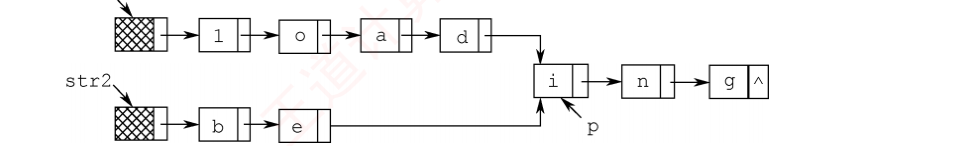
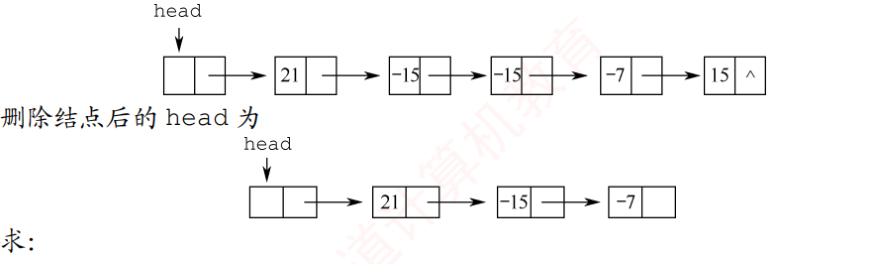

408
408先答旧题
顺序表插入和删除挪动方向？
循环左移 p 位怎么做？
顺序表随机存取靠什么？
LOC(a₁)+(i−1)·size，地址可算。顺序表插入删除要挪元素，还要一整块连续空间。链表把元素分散放，用指针连起来。代价是不能随机存取。代码都很短，难点全在指针的顺序：画两个方框、三个箭头，就知道哪句先写。
其之壹单链表：用「改绳子」想问题
把结点想成人手拉手
每个结点是一个人，next 是他的右手。手里抓不住的人就彻底找不回来了（内存泄漏）。所以改指针的铁律是：先让新人抓住后面的人，再让前面的人抓住新人。
结点结构，以及为什么总要带一个头结点：有了它，第一个数据结点也有「前驱」，插入删除不用单独判断表头。空表判断：带头结点 L->next==NULL，不带头结点 L==NULL。
typedef struct LNode { int data; struct LNode *next; } LNode, *LinkList;
单链表四个基本动作
后插：s->next = p->next; p->next = s;
删除 p 的后继：q = p->next; p->next = q->next; free(q);
前插（不知道前驱）：先后插，再交换 p 和 s 的 data。
删除 p 本身（不知道前驱）：把后继的 data 拷过来，删掉后继。尾结点不能这样做。
建表与逆置
建表有两种。头插法：新结点插到头结点之后，建出来的链表是逆序的。尾插法：用一个尾指针，新结点接到最后，是正序的。这两个动作是所有链表算法的积木。
合上页面说一遍：为什么要头结点？后插操作两句的顺序？不知道前驱时怎样在 p 前面插？
第一个结点也有前驱，统一代码。先 s->next=p->next 再 p->next=s。先后插，再交换数据。
void Reverse(LNode *L) { // L 带头结点 LNode *p = L->next, *r; L->next = NULL; // 把头结点摘出来当新表 while (p != NULL) { r = p->next; // 先记住后继，否则断了 p->next = L->next; // 头插 L->next = p; p = r; } }
其之貳双链表与循环链表
双链表多一个 prior 指针，能往回走。
双链表的两个动作（在 p 后插入 s；删除 p 的后继 q）
插入改 4 个指针：s->next = p->next;if (p->next) p->next->prior = s;s->prior = p;p->next = s;
删除只需要改 2 个指针：p->next = q->next;if (q->next) q->next->prior = p;
循环单链表尾结点的 next 指回头结点，判空条件是 L->next==L。如果只设尾指针 r，那么头尾都能 O(1) 访问（r->next 就是头结点）。循环双链表再加上头结点的 prior 指向尾结点。
「设了尾指针」也快不了的操作
删除最后一个结点要找到它的前驱。单链表无论设不设尾指针都要遍历，只有双链表（循环双链表）是 O(1)。
静态链表：用数组下标当指针，next 存下标，结束标志一般是 −1。不能随机存取，但插入删除不用挪元素。
其之參顺序表 vs 链表
| 维度 | 顺序表 | 链表 |
|---|---|---|
| 存取 | 随机存取，O(1) | 顺序存取，O(n) |
| 按序号查找 | O(1) | O(n) |
| 按值查找（无序） | O(n) | O(n) |
| 按值查找（有序） | 折半，O(log n) | 只能 O(n) |
| 插入删除 | 要挪元素，O(n) | 改指针 O(1)，但找位置 O(n) |
| 存储密度 | =1 | <1（有指针开销） |
其之肆四个经典问题，四个套路
下面四个问题的解法可以直接默写。先自己想，再往下看。
套路一：先后指针拉开距离
倒数第 k 个：让 q 先走 k 步，然后 p、q 一起走。q 到头时，p 正好在倒数第 k 个。一趟扫描，O(n)。
int Search_k(LinkList list, int k) { LNode *p = list->next, *q = list->next; int count = 0; while (q != NULL) { if (count < k) count++; else p = p->next; q = q->next; } if (count < k) return 0; // k 超过链表长度 printf("%d", p->data); return 1; }
套路二：长度差对齐
两条链表从某点开始共用尾部，形状像 Y。尾部长度相同，所以把长的那条先走掉长度差，然后同步走，第一个相同的指针（不是值）就是交点。
套路三：绝对值当下标
要去掉绝对值重复的结点，而且 |data|≤n：开一个大小 n+1 的标记数组，第一次见到就标记，再见到就删。这是 第 02 话 招式四在链表上的翻版。
套路四：三连击：找中点 + 逆置 + 穿插
目标形状 a₁ aₙ a₂ aₙ₋₁…。观察：后半段是倒着插进前半段的。空间要 O(1)，所以不能开数组。
链表四个模子
倒数第 k / 中点 → 快慢指针
两表交点 → 长度差对齐
去重 / 找重复且值域有限 → 标记数组
要改顺序且空间 O(1) → 找中点 + 逆置 + 插入
合上页面说一遍：四个模子各解决什么问题？默写倒数第 k 个和原地逆置。
倒数第 k、中点：快慢指针。两表交点：长度差。值域有限去重：标记数组。O(1) 空间改顺序：中点 + 逆置 + 穿插。
领域展开
改指针：先抓后面，再接前面。
双链表：插入改 4，删除改 2。
模子：拉开距离、长度差、下标当哈希、中点 + 逆置 + 穿插。
其之伍实战
再深一层
| 地址 | 元素 | 链接地址 |
|---|---|---|
| 1000H | a | 1010H |
| 1004H | b | 100CH |
| 1008H | c | 1000H |
| 100CH | d | NULL |
| 1010H | e | 1004H |
| 1014H | — | — |
地址 元素 链接地址 1000H a 1010H 1004H b 100CH 1008H c 1000H 100CH d NULL 1010H e 1004H 1014H f ____ （新插入）
再深一层
int Search_k(LinkList list, int k){
LNode *p=list->next, *q=list->next; // 两指针都从首元结点出发
int cnt=0;
while(p){
if(cnt<k) cnt++; // 先让 p 单独走 k 步
else q=q->next; // 之后 p、q 同步走
p=p->next;
}
if(cnt<k) return 0; // 长度不足 k，失败
printf("%d", q->data); // q 恰为倒数第 k 个
return 1;
}再深一层

LNode *findCommon(LinkList str1, LinkList str2){
int la=0, lb=0; LNode *p=str1->next, *q=str2->next;
while(p){ la++; p=p->next; } // 求两表长
while(q){ lb++; q=q->next; }
p=str1->next; q=str2->next;
for(; la>lb; la--) p=p->next; // 长表先走 |la-lb| 步，尾对齐
for(; lb>la; lb--) q=q->next;
while(p && p!=q){ p=p->next; q=q->next; }// 同步走，第一个“同地址”结点即公共后缀起点
return p;
}再深一层

void del_abs_dup(LinkList L, int n){
int *flag=(int*)malloc((n+1)*sizeof(int));
for(int i=0;i<=n;i++) flag[i]=0; // 标记 |data| 是否出现过
LNode *pre=L, *p=L->next;
while(p){
int a = p->data>=0? p->data : -p->data; // |data|
if(flag[a]==0){ flag[a]=1; pre=p; p=p->next; } // 首次出现，保留
else { pre->next=p->next; free(p); p=pre->next; } // 重复，删除
}
free(flag);
}再深一层
void rearrange(LinkList L){
// ① 快慢指针找中点（slow 停在前半末尾）
LNode *slow=L, *fast=L;
while(fast->next && fast->next->next){ slow=slow->next; fast=fast->next->next; }
// ② 逆置后半（slow->next 起）
LNode *p=slow->next, *pre=NULL, *r;
slow->next=NULL;
while(p){ r=p->next; p->next=pre; pre=p; p=r; }
// ③ 前半与逆置后半交替归并
LNode *a=L->next, *b=pre, *t;
while(b){ t=a->next; a->next=b; a=t; // 插一个后半结点
t=b->next; b->next=a; b=t; }
}再深一层
做完再翻：这些题到底在问什么
这四道大题对应四个模子。题目明确说「尽可能高效」且给了值域，往往就是标记数组；要求 O(1) 空间就是指针技巧。 两表交点比较的是指针，不是值。 选择题常让你看着存储表还原链表，一步步跟 next 就行。